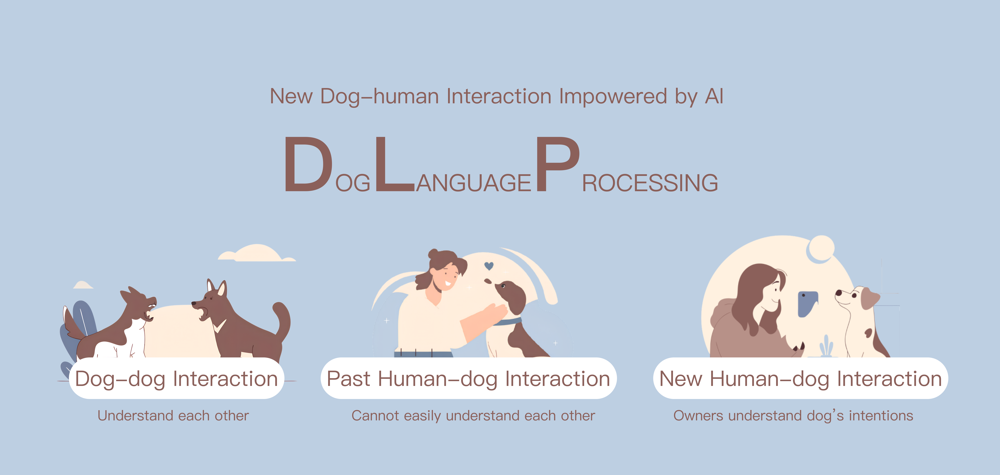
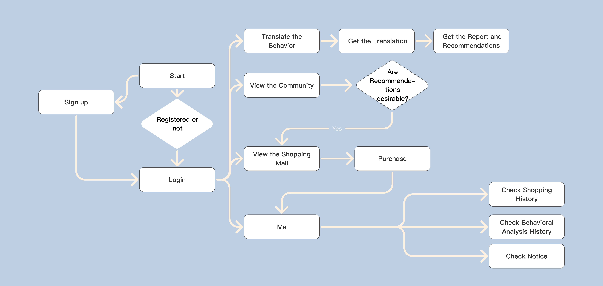
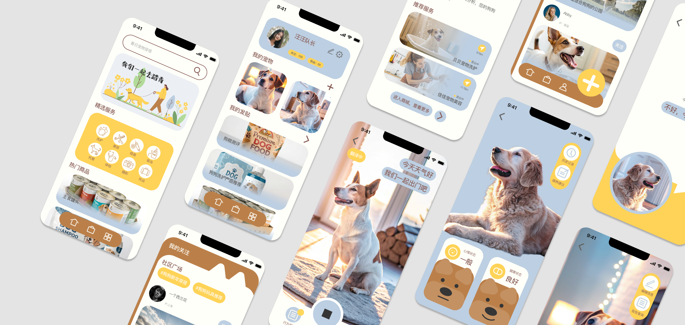

Tailtell
A dog behaviour translation APP powered by AI

Individual Project
ML Framework: PyTorch
LMM: Qwen-Turbo
OVERVIEW
About project
Problem Statement
Dog owners interact with their dogs every day, but much of that interaction relies on interpretation rather than understanding. Dogs express emotions through subtle facial cues, yet these signals are often ambiguous to humans. This creates a persistent communication gap between how dogs express internal states and how humans interpret them.
Solution Statement
TailTell explores a new form of dog–human interaction by using AI to translate canine facial expressions into emotionally readable messages. The system analyzes a dog’s facial expression from an image, identifies the underlying emotional state using a vision-based model, and then interprets that signal through a language model to produce a short, expressive message.
GOAL
Achieving DLP

TECH STACK
CV Model Training
The emotion recognition model is built with a CNN-based computer vision approach. I chose CNNs because they’re lightweight, fast, and well-suited for visual pattern recognition — especially for facial expressions, where spatial features matter more than long-range context.
You can interact with the model on Hugging Face.
BUSINESS MODEL
An Entry Point to Pet Care Ecosystem
Based on these emotional records, Tailtell provides feeding and care recommendations. These recommendations naturally connect users to pet services like grooming, health checks, and daily care. So Tailtell is not just a fun AI demo — it’s designed as an emotional entry point into the pet care ecosystem.

DESIGN
User Interface Design
